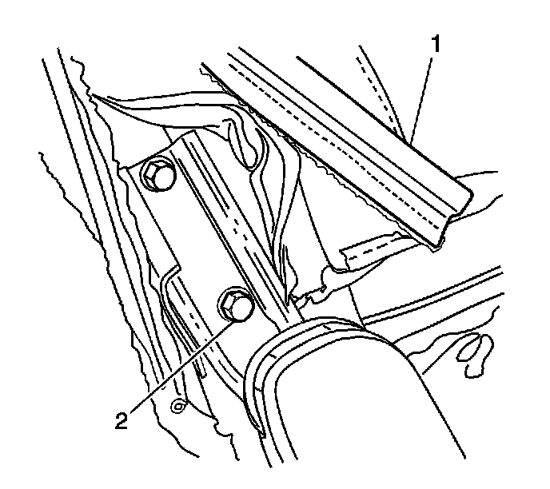

Rear Seat Head Restraint Guide Replacement
Rear Seat Head Restraint Guide Replacement
Removal Procedure
1. Remove the rear seat. Refer to Rear Seat Replacement (Rear Seat Replacement) .
2. Remove the rear seat back. Refer to Rear Seat Number 1 Back Replacement - Left Side (Rear Seat Number 1 Back Replacement - Left Side) or Rear Seat Number 1 Back Replacement - Right Side (Rear Seat Number 1 Back Replacement - Right Side) .
3. Remove the head restraints. Refer to Rear Seat Head Restraint Replacement (Rear Seat Head Restraint Replacement) .
4. Remove the rear seat back cover far enough to access the head restraint guides. Refer to Rear Seat Back Cushion Cover and Pad Replacement - Left Side (Rear Seat Back Cushion Cover and Pad Replacement - Left Side) or Rear Seat Back Cushion Cover and Pad Replacement - Right Side (Rear Seat Back Cushion Cover and Pad Replacement - Right Side) .

5. Pinch the head restraint guide (1) to release it from the seat frame.
6. Remove the head restraint guide.
Installation Procedure

1. Connect the J channel retainers (1) on the rear seat back cover.
2. Install the head restraint guides into the seat back frame.
3. Install the head restraints. Refer to Rear Seat Head Restraint Replacement (Rear Seat Head Restraint Replacement) .
4. Install the rear seat back. Refer to Rear Seat Number 1 Back Replacement - Left Side (Rear Seat Number 1 Back Replacement - Left Side) or Rear Seat Number 1 Back Replacement - Right Side (Rear Seat Number 1 Back Replacement - Right Side) .
5. Install the rear seat. Refer to Rear Seat Replacement (Rear Seat Replacement) .